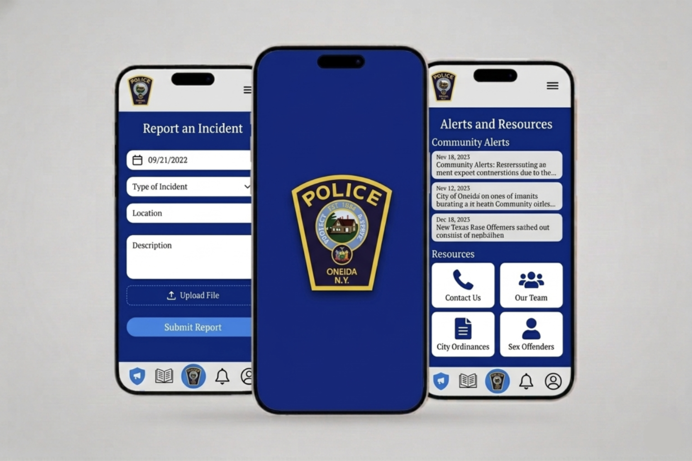
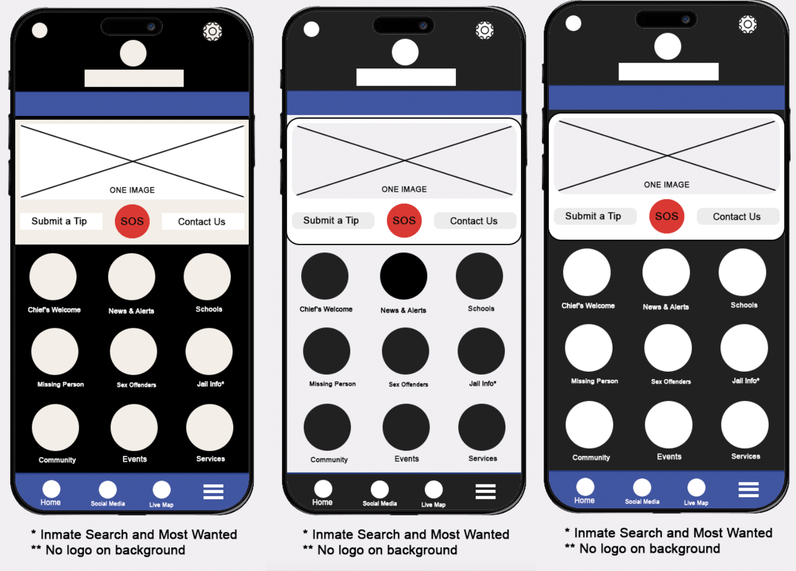

UX Research | UI Research

Not every UX project starts with designing something new; sometimes, the real impact comes from improving what already exists.
This project focused on conducting a UX evaluation of the Oneida Police Department’s mobile application, with the goal of identifying usability issues and providing actionable recommendations to increase adoption and engagement.
The work in this project centered on understanding how users interact with the current experience—and what prevents them from using it effectively.
The outcome was a set of UX-driven recommendations aimed at helping the department improve usability, strengthen community connection, and encourage more users to download and engage with the app.
The application was designed to serve as a communication tool between the police department and the community, but it was not achieving its full potential.
Several issues limited its effectiveness, such as outdated interface design that reduced credibility and usability, low user engagement, with minimal interaction beyond basic use, heavy, text-based content that made information difficult to consume, broken links and performance issues that disrupted the user experience, and lack of interactive and community-focused features
As a result, users had little incentive to download or regularly use the app.
Instead of jumping into redesign, the approach focused on evaluation and strategy.
I conducted a UX analysis supported by usability testing principles, observing how users interact with the app and identifying key friction points. From there, I developed a set of recommendations focused on improving both usability and engagement.
Key recommendations included:
My role was to bridge the gap between user needs and an existing system that was underperforming.
Through this evaluation, we were able to identify key usability issues affecting engagement and trust, translate user behavior into clear, actionable recommendations, provide a strategic direction for improving both UX and community interaction, and highlight opportunities to increase adoption through design and content improvements
To understand how the app performs in real-world scenarios, I applied usability testing principles focused on user behavior and feedback. The software called UXtweak was used, and we were able to collect input and opinions on the current usability from several people within various demographics.
While using the software, the 5 participants were asked to complete typical tasks within the app, while observations were made on navigation patterns, points of confusion or hesitation, errors, and broken interactions.
They were also encouraged to share feedback on their experience, including satisfaction, clarity, and perceived usefulness.
The evaluation uncovered several recurring issues:
An outdated interface immediately reduced trust and credibility
Large blocks of text and poor structure made the information hard to digest
Without interactive elements, users had little reason to return
Non-working links and performance issues created frustration
The app lacked features that reflect local engagement and relevance
Even simple customization features can improve user satisfaction

This project highlights the importance of evaluating existing systems through a user-centered lens.
Rather than focusing solely on visual redesign, the work demonstrates how identifying usability issues and aligning them with user expectations can lead to meaningful improvements—especially in public-facing platforms.
By addressing clarity, performance, and engagement, the recommendations provide a roadmap for transforming the app into a more effective communication tool for the community.
With further implementation and testing, these improvements have the potential to increase adoption, strengthen community trust, and create a more connected relationship between the department and its users.